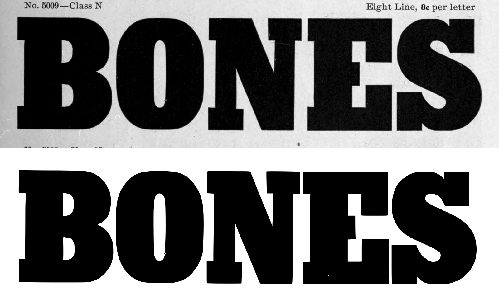
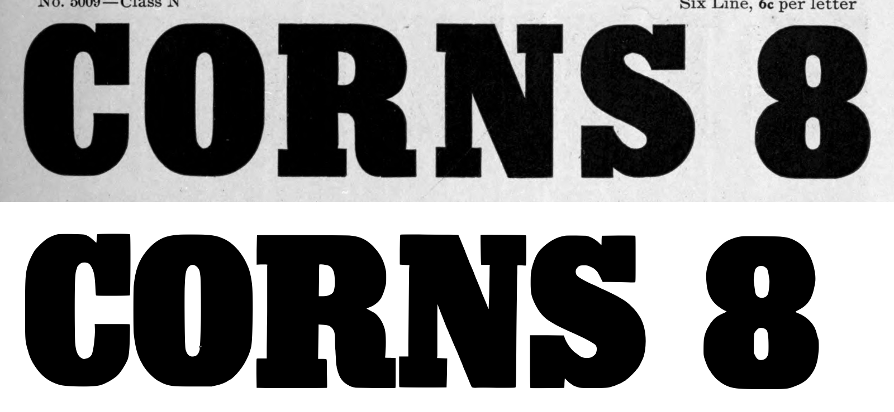
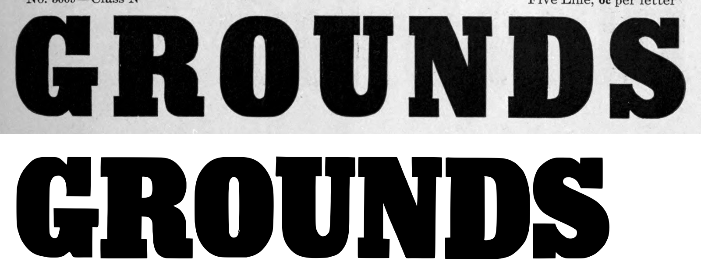
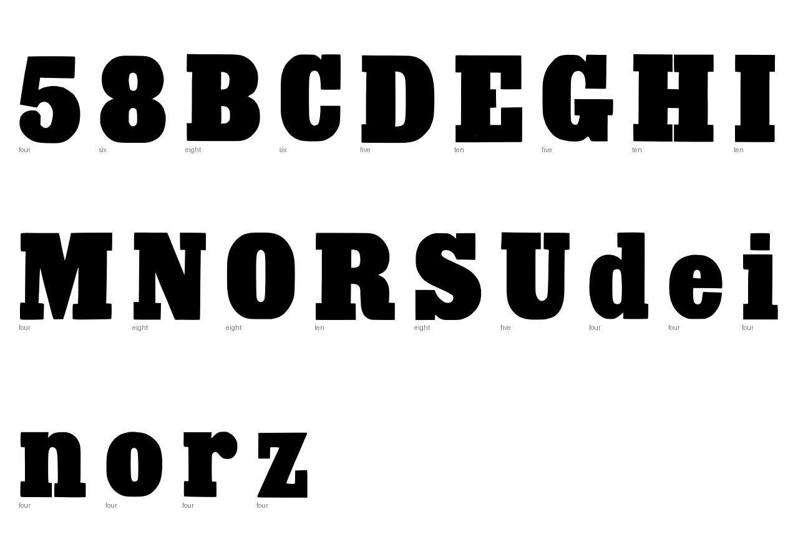
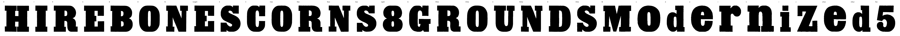

Gray letters are constructed, not traced.


[]
{
"893:ten": {
"n_caps": 4,
"cap_height_px": 660.0,
"baseline_px": 3413.0,
"glyphs": [
"H",
"I",
"R",
"E"
],
"stem_px": 218.5,
"scale": 1.06061,
"stem_units": 231.7
},
"893:eight": {
"n_caps": 5,
"cap_height_px": 529,
"baseline_px": 2601,
"glyphs": [
"B",
"O",
"N",
"E.eight",
"S"
],
"stem_px": 129,
"scale": 1.32325,
"stem_units": 170.7
},
"893:six": {
"n_caps": 5,
"cap_height_px": 397,
"baseline_px": 1917,
"glyphs": [
"C",
"O.six",
"R.six",
"N.six",
"S.six",
"eight"
],
"figure_height_px": 398,
"stem_px": 96,
"scale": 1.76322,
"stem_units": 169.3,
"figure_height": 702
},
"893:five": {
"n_caps": 7,
"cap_height_px": 331,
"baseline_px": 1364,
"glyphs": [
"G",
"R.five",
"O.five",
"U",
"N.five",
"D",
"S.five"
],
"stem_px": 79,
"scale": 2.1148,
"stem_units": 167.1
},
"893:four": {
"n_caps": 1,
"cap_height_px": 266,
"baseline_px": 880,
"glyphs": [
"M",
"o",
"d",
"e",
"r",
"n",
"i",
"z",
"e.four",
"d.four",
"five"
],
"x_height_px": 199,
"figure_height_px": 265,
"stem_px": 43,
"scale": 2.63158,
"stem_units": 113.2,
"x_height": 524,
"figure_height": 697
}
}
{
"archive_id": "bookoftypespecim00barnrich",
"title": "Book of type specimens. Comprising a large variety of superior copper-mixed types, rules, borders, galleys, printing presses, electric-welded chases, paper and card cutters, wood goods, book binding machinery etc., together with valuable information to the craft. Specimen book no.9",
"creator": [
"Barnhart, bros. & Spindler, firm, type founders, Chicago",
"De Young family",
"De Young, Charles, 1881-"
],
"publisher": "Chicago, Barnhart bros. & Spindler",
"date": "[1907]",
"ppi": 400,
"url": "https://archive.org/details/bookoftypespecim00barnrich",
"copyright_status": "NOT_IN_COPYRIGHT",
"contributor": "University of California Libraries",
"leaves": [
893
]
}